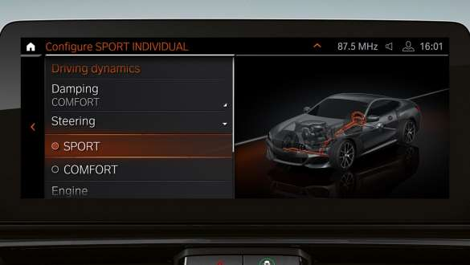

|
||||
| Motor ve Yakıt Tipi | Güç | 0-100KM | Ortalama yakıt tüketimi (litre/100 km): | |
| Benzin | 333 bg | h:4.9sn | 8.9–8.6 | |
 |
M SPORT TASARIMI. |
|
BMW 840i xDrive Cabrio, M Sport tasarımıyla birlikte sunuluyor. Ayrıcalıklı özelliklerle otomobilinize daha atletik bir görünüm kazandırın:
|

| BMW 8 SERİSİ COUPÉ’NİN ÖNE ÇIKAN İÇ TASARIM ÖZELLİKLERİ. | ||
| BMW 8 Serisi Coupé'nin iç tasarımı, kapsamlı yüksek kalitede donanım ve ayrıcalıklı özellikleri sayesinde modern atletik karakterin ve konforlu bir lüksün bir arada bulunduğu bir ortam yaratıyor. | ||
 |
 |
 |
| M Sport tasarım ön koltuklar. | Bowers & Wilkins Diamond Surround Ses Sistemi. | ‘Crafted Clarity' cam uygulaması. |
| M Sport tasarım ön koltuklar kapsamlı ayarlama olanakları, oturma konforu ve güvenlik sunuyor. | Bowers & Wilkins Diamond surround ses sistemi, 1.400 W çıkışıyla otomobildeki her koltukta stüdyo kalitesinde olağanüstü bir ses sunuyor. | 'CraftedClarity' cam uygulama iç tasarımı görsel ve dokunsal açıdan zenginleştiren el yapımı cam öğelerden oluşuyor. Vites seçim kolu, BMW Controller ve Start/Stop düğmesinin detayları zarif cam malzemeden üretiliyor. |
| BMW 8 SERİSİ COUPÉ’NİN HAREKETLİ AKSAM VE YÜRÜYEN AKSAM TEKNOLOJİLERİ. | ||
| BMW 8 Serisi Coupé üst düzey dinamikler sunuyor: Kusursuz şekilde ayarlanan hareketli aksam ve yürüyen aksam teknolojileri her an sportif bir sürüş deneyimi sunuyor. | ||
 |
 | |
| Son derece verimli BMW TwinPower Turbo motorlar. | Adaptif M süspansiyon. | İntegral Aktif Direksiyon. |
| BMW 8 Serisi Coupé opsiyonel olarak verimli BMW TwinPower Turbo 6 silindirli benzinli veya dizel bir motorla donatılıyor. | Adaptif M süspansiyon, amortisör karakterinin herhangi bir sürüş koşuluna uyarlanabilmesini sağlayarak konfor ve sürüş dinamiklerini artırıyor. | Integral Aktif Direksiyon düşük hızlarda manevra kabiliyetini ve çevikliği desteklerken, yüksek hızlarda da dengeyi artırır. |